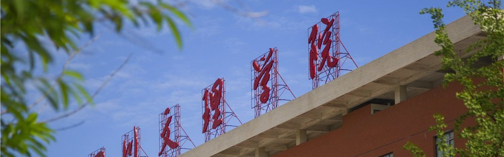
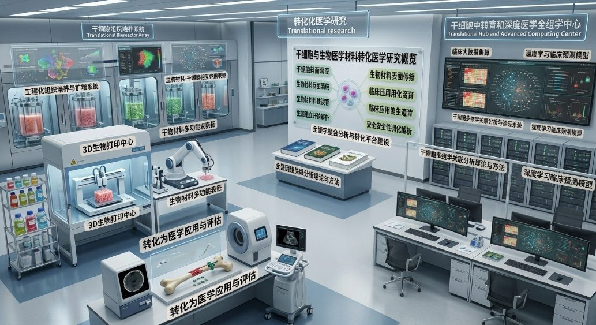
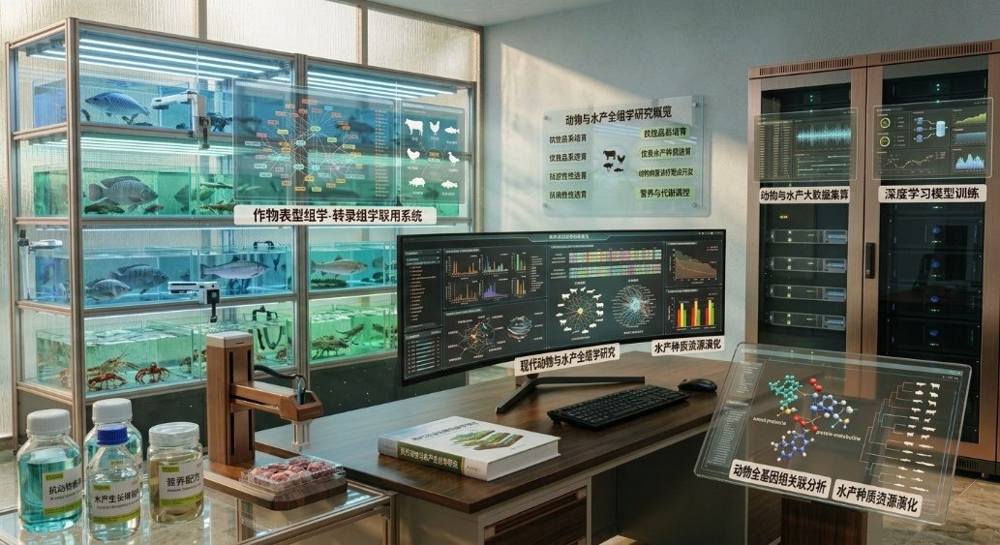

我们专注
- 0+ 发表学术论文
- 0+ 主持科研项目
- 0+ 核心成员
- 0+ 科研训练本科生
- 0 团队博士
- 0+ 专利与软著
- 0 大研究方向
- 0 高性能计算设备
学术前沿
MORE +新闻公告
MORE +

- 09.17 / 2026 团队获批四川省自然科学基金重点项目立项资助 喜讯：团队负责人主持承担的省级重点科研项目正式获批立项，将聚焦交叉前沿开展攻关。
- 团队成功举办医工交叉学术研讨会 06.09
- 团队成员受邀参加全国生物信息学学术会议并作报告 06.05
- 团队面向全校招募科研助理与创新小组 03.12